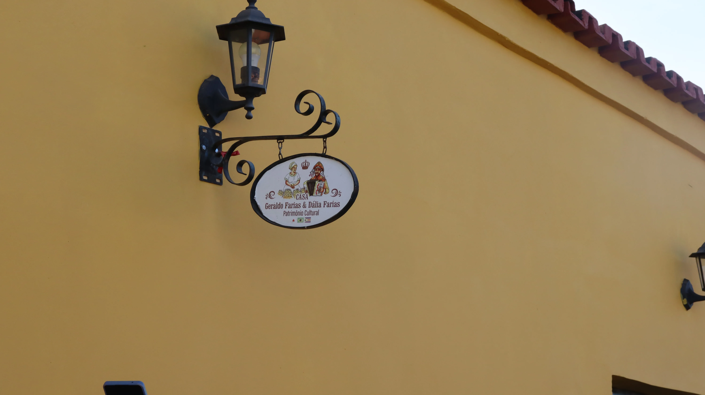

Sobre o local
O Memorial do Pão de Queijo é o primeiro museu dedicado à preservação, valorização e divulgação da cultura do pão de queijo e do trabalho das quitandeiras em Minas Gerais. Instalado na Casa Geraldo Farias & Dália Farias, antiga residência de uma tradicional família quitandeira de Januária, o espaço preserva memórias, objetos e saberes relacionados à produção de quitandas no sertão mineiro. O memorial homenageia o mestre sanfoneiro, compositor e quitandeiro Geraldo Farias e a mestra quitandeira Dália Farias, personagens que contribuíram para a construção da identidade cultural de Januária. Seu acervo reúne mais de 114 objetos catalogados, incluindo fotografias históricas, fornos, documentos e utensílios gastronômicos que ajudam a preservar o modo de fazer e a trajetória das quitandeiras da região. A visita também proporciona uma experiência gastronômica, com café e pão de queijo preparados na hora, aproximando o visitante dos sabores e dos saberes que fazem parte da cultura alimentar local.
Informações sobre o local
Horário de funcionamento: Mediante agendamento
Tipo de visita: Visita guiada (com agendamento prévio)
Formas de pagamento: Não há cobrança para acesso
Pet Friendly: Sim
Contato: WhatsApp: (38) 99848-2059 | E-mail: memorialpaodequeijo@gmail.com
Site: Não há